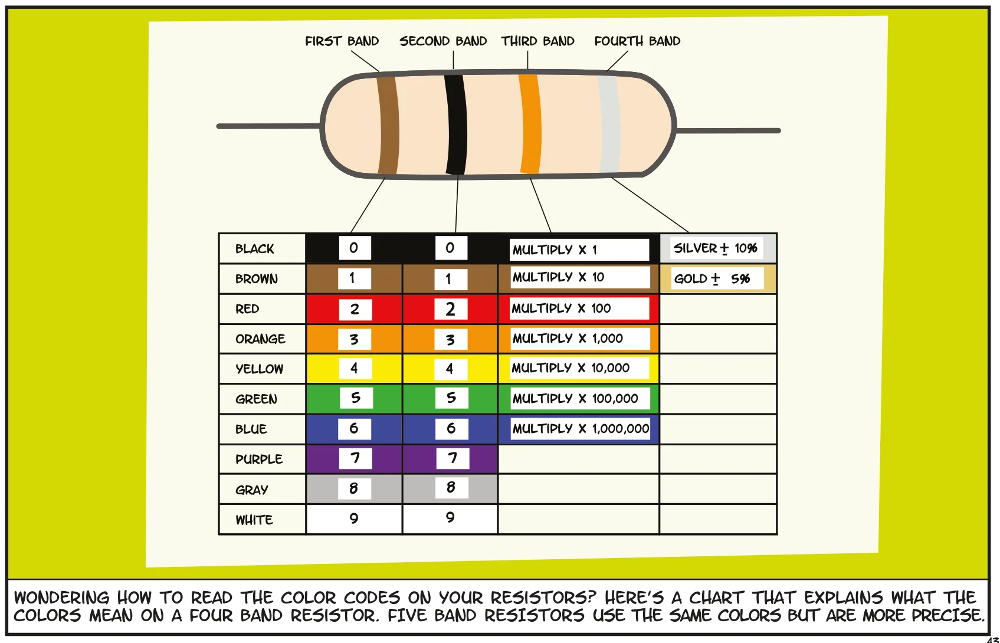

| Colour | 1st band | 2nd band | 3rd band (multiplier) | 4th band (tolerance) |
|---|---|---|---|---|
| Black | 0 | 0 | × 1 | |
| Brown | 1 | 1 | × 10 | |
| Red | 2 | 2 | × 100 | |
| Orange | 3 | 3 | × 1,000 | |
| Yellow | 4 | 4 | × 10,000 | |
| Green | 5 | 5 | × 100,000 | |
| Blue | 6 | 6 | × 1,000,000 | |
| Purple | 7 | 7 | ||
| Gray | 8 | 8 | ||
| White | 9 | 9 | ||
| Gold | ± 5% | |||
| Silver | ± 10% |
Example: brown – black – yellow – gold = 1, 0, × 10,000 = 100,000 Ω (100 kΩ) ± 5%. Five-band resistors use the same colours but have three digit bands, so they are more precise.